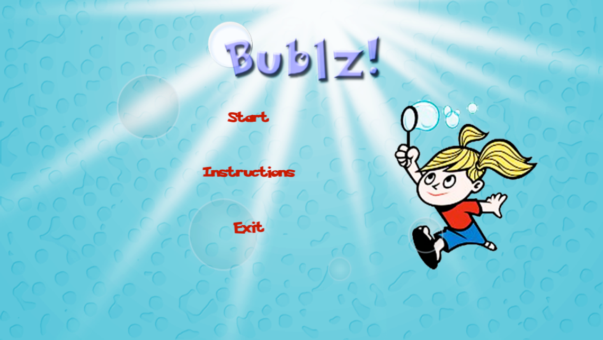
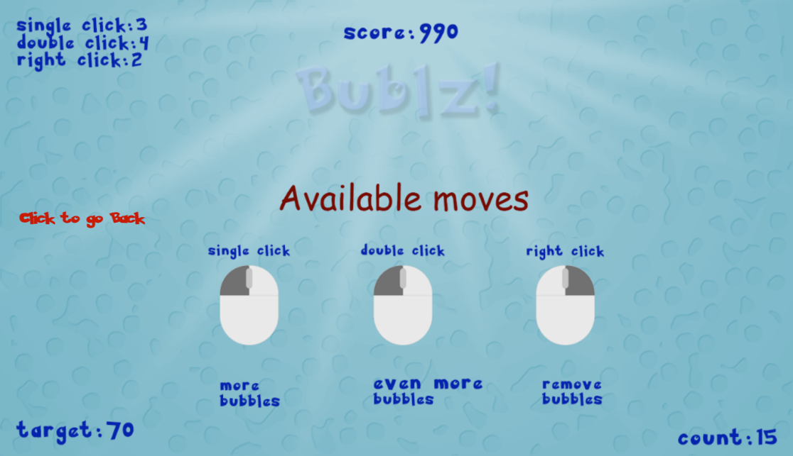
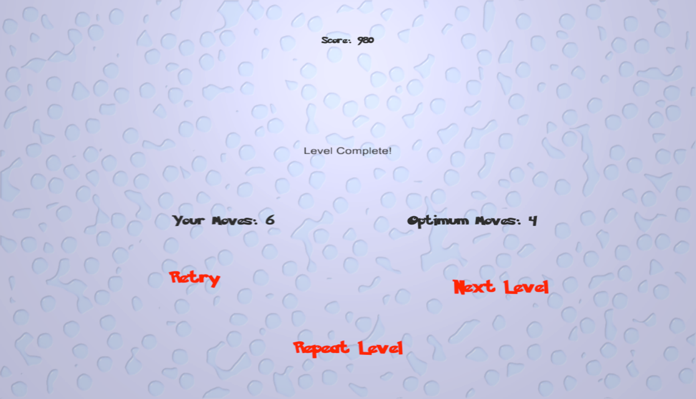

Bublz
December 2013
Bublz! is a simple, click-driven game for children which aims at honing mental arithmetic in an enjoyable manner. We developed a fully-functioning digital prototype with six levels of play using Unity 3D game engine.

Game Play

For each of the six levels in the game, a unique triplet of positive numbers (L, D, R) is associated with the three common types of clicks done on a mouse: single left-click, double left-click, single right-click. When a level starts, one bubble is displayed on the screen. A positive target number T randomly chose from the integers between 2 and 70, both inclusive, and the triplet associated with the three types of clicks for the level, are also displayed on the screen. The player is given an initial score of 1000. When the player does a single left-click on a bubble, L new bubbles are created. When the player does a double left-click on a bubble, D new bubbles are created. When the player does a single right-click on a bubble, R bubbles are removed or "popped", including the bubble on which the click was done. The player's task is to obtain T bubbles on the screen using a combination of the three types of clicks. To obtain the highest possible score of 1000, the player should do it in least number of moves in which T bubbles can be obtained on the screen. With each move made beyond the least number of moves, the player's score reduces by 10.
Game Design
For each level, the triplet values (L, D, R) are chosen such that any positive number can be generated using a linear combination of L, D and -R. For example (3, 4, -1) is a vaild triplet because any positive number can be generated using a linear combination of 3, 4 and -1. This ensures that there is always at least one sequence of moves to generate T bubbles. Triplets of higher magnitudes are chosen for higher levels to make them more difficult. For example, if the current level has (3, 4, 1) as the click triplet, the next level could have (5, 7, 4) as the click triplet. To ensure that there will always be at least one bubble on the screen that can be clicked, the game prevents the player from doing a single right-click move when the number of bubbles on the screen is lesser than or equal to the value of R. This is done by displaying an appropriate message. To ensure that the player doesn't unnecessarily overload the screen with bubbles by doing single/double left-clicks all the time, the game also prevents a player from making a single/double left-click move if making that move would result in the total number of bubbles on the screen exceeding a threshold value of 150.
Usability Testing

We organized a preliminary play session for ten middle school students from a local school in Bangalore, India. We made several observations from the play sessions. As the play session progressed, most students who got large targets almost instantly did a double left-click as their first move. This suggests that in the course of playing the game, the students developed a mental representation associating the number of left-clicks with the number of bubbles they could generate, a positive feedback to our design decision of generating more bubbles for a double left-click than for a single left-click. The students also took greater time to complete higher levels and reported during post-play feedback interview that they found higher levels challenging, a positive feedback to out decision to use triplets of higher magnitude in higher levels. We observed the time students spent playing the game and determined their intention to replay the game through post-play interviews. According to both factors, students showed clear motivation to play the game. They reported liking and enjoying the game. When asked the game's utility to them, most students felt the game would make them "better at mathematics".